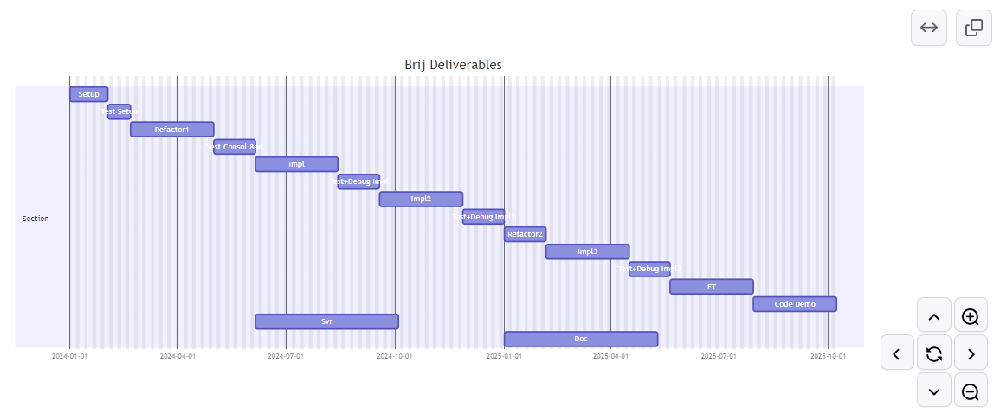

The Deliverables
The Skinny
We estimate that we can deliver a working prototype - with a working demo - in less than two years.
The Details
Basic Deliverables - Overview
- Deliver a Fully Functional (NO shortcuts or missing functionality)
BrijDatabase Engine. - Deliver a Working Demo including a video that shows an average user
- Creating a new Database
- Populating it with Data
- Creating numerous Queries/Views to query the data
- Creating a Form to display the data
- Using this newly created
BrijDatabase to update the existing data. (Please note: The script for the Demo is ready, see here)
Basic Deliverables - Granular Detail
A short list of tasks required to be completed as of today.
| Module | Task Description | Category |
|---|---|---|
| All | Setup MongoDb Account | Setup |
| All | Bld/Setup Server Container (RackSpace?) | Setup |
| All | Procure Server Certificates/IDs | Setup |
| All | Setup hardware config. | Setup |
| Core | Merge CoreAux into Assembly | Refactor1 |
| Core | Merge utils into Assembly: SetEnv, Mapper, PhatDelta, cmp (nds consolidation) | Refactor1 |
| Core | Merge Parser into Assembly | Refactor1 |
| UI | Merge UIAux into Assembly | Refactor1 |
| BrijServer | Merge Mongo.fs into Assembly | Refactor1 |
| All | (Final step) After Refactor1 remove interned copies of functions retained for compilation (e.g. brijLogo in Brij.fs); ensure consistency across all Assemblies | Refactor1 |
| Brij | Fix: type DocFld member getBoxedGenericVal() nds work (@sic) | Impl |
| Brij | Fix: module Gullo/fn openDes nds work (@sic) | Impl |
| Brij | Fix: module DatImporter/fn pcDat() nds work (@sic) | Impl |
| BrijServer | Fix: fn getBoxedGenericVal() nds work (@sic) | Impl |
| BrijServer | Fix: fn getTSButtonSvr: port to UI + nds work (@sic) | Impl |
| UI | Fix: module Helpers/fn getImgInNewColor nds work (@sic) | Impl |
| UI | Fix: type ફીલ્ડ_પેનલ/usrOverrides nds work (@sic) | Impl |
| UI | Fix: type ફોરમ_પીચાક/tbar nds work (@sic) | Impl |
| UI | Fix: Several leftovers from wwnn, e.g. getArrowBtnPanel: either chk/remove or move into sep mod (@sic) | Impl |
| UI | Fix: FrmFldType.FldChoiceList curr hardcoded; nds DesignView lkup | Impl |
| UIAux | Fix: fn baseTkDatAux nds work (@sic) | Impl |
| UIAux | Fix: કલકતી_પાન_Aux chuno uses 'categByHardCoded' | Impl |
| UIAux | Fix: type કેટ_પેનલ nds work (@sic) | Impl |
| UIAux | Fix: type એક્સ_પેનલ nds several updates (@sic) | Impl |
| UIAux | Fix: type BM_AppPg.FldInfoBox nds work (@sic) | Impl |
| UIAux | Fix: type બનારસી_પીચાક_eoy.katho() nds work (@sic) | Impl |
| UIAux | Fix: type CM_ColsPg nds work (@sic) | Impl |
| UIAux | Fix: type CM_AppPg nds work (@sic) | Impl |
| UIAux | Fix: type મીઠૂ_પાન_eoy: CSV Importer nds work (@sic) | Impl |
| UIAux | Fix: type બનારસી_પાન nds work for cols/etc. (@sic) | Impl |
| UIAux | Fix: Remove in-line help in MM | Impl |
| Brij | @CpT Build Brij Server (SignalR) with Push capabilities | Svr |
| All | @CpT new Condition Builder using FParsec | Impl2 |
| All | @CdT new Expression Builder using FParsec | Impl2 |
| All | @CdT new Calculated Field Type using Expression Builder | Impl2 |
| UI | @CdT All BM pages need to be consolidated into a tabbedView | Impl2 |
| All | @CpT BPDz needs to be extended for variable cols | Impl2 |
| All | @CpT All BPDz field-level functionality & re-ordering | Impl2 |
| Core | @CpT Parser needs connector types + logic | Impl2 |
| Core | @CpT Parser needs to check for valid FieldTypes from MM | Impl2 |
| Core | @CdT CSV Import module | Impl2 |
| Core | @CdT Query Generation | Impl2 |
| All | Merge deltaVersions, decloak/santize, remove sanity chks/safeguards, consolidate | Refactor2 |
| Brij | @CpT DocVersioning Module | Impl3 |
| Brij | @CpT DocEditHistory Module | Impl3 |
| Brij | @CpT DocAttachment Module | Impl3 |
| Brij | @CpT DocImage Module | Impl3 |
| All | Complete, system-wide testing under different loads/variables | FT |
| All | @Cdt Complete, system-wide basic user documentation including Tutorials and WalkThroughs | Doc |
Legend:
- **@CdT** -> Code and Test
- **@CpT** -> Complete Coding and Test
- **@sic** -> see inline comments (within code)
Deliverables: Gantt View
Please Note: The above Gantt Chart excludes weekends and Mondays. Mondays represent 20% of the workweek and will be used for Ongoing Management Tasks, including the following:
- Product/Market Research (possible competitors, appropriate UX tech, etc.)
- Tech. Research (Any new tech in the market we could use? Saas people/tech. Plus Seminars etc.)
- Analysis/due diligence (milestones/direction/potential challenges/positioning)
- Networking (esp.ly identify/contact people in low/no code shops + in the large Cloud Providers. Would they be receptive? Are they working on something similar? Need to be sensitive to IP security.)
- Legal footwork (make sure our IP is safe)
- HR/Talent (identification/retention/maximisation)
- Marketing & Communications (including with VCs etc.)
Additional Tasks
In case we get more than adequate support we shall focus on the tasks below.
| Module | Task Description | Category | Duration |
|---|---|---|---|
| All | Code/Test/Deploy drivers for Azure DocumentDB | v2.0 | 40d |
| All | Code/Test/Deploy drivers for Google Firestore | v2.0 | 40d |
| All | Code/Test/Deploy drivers for Amazon DynamoDB | v2.0 | 40d |
| All | Code/Test/Deploy drivers for IBM Cloudant | v2.0 | 40d |
| All | Code/Test Client-hosted Data version | v2.0 | 60d |
| All | Design/Code/Test Sample Databases + Documentation | v2.0 | 120d |
What's not included?
A few task items from the Brij Kanban board have been shelved because they have been determined to be not required. Given more time/funds, completing these tasks would produce a more acceptable and robust product ->
- (UI) The coding engine for Product Internationalisation (i18n) is complete and the hooks have been built. Procure/setup/test at least 3 languages: Fr/De/Esp. Can be subcontracted.
- (UI) Three
Skinshave been developed and are in place. Eventually the product should have at least a dozen (user expectations). Can be subcontracted. - (All) The original plan was to ship
Brijwith at least four to five "Sample" databases in the Desktop. Lotus Notes had the same. The idea would be to allow the user to tinker with some fairly complicated use cases and add further specific documentation (for example,WalkThroughs) outlining how a user could utilize a particular product feature.
Designing and creating both the Sample Dbs and related Documentation would involve considerable effort. However, this has been determined not neccessary: we expect the target audience to be quite tech savvy, and therefore the Demo Script should suffice in showcasingBrij.
Future Direction
Current Plan
Our current plan (subject to change) is to retain the IP for the Brij Engine and to sell or license the product to:
- One of the large Cloud Providers (Microsoft/IBM/Google/AWS)
- MongoDB itself
- Any number of
dBaas\Low-Code\No-Code vendors
The bulk of potential revenue is in the Enterprise Market, and the Engine delivered in the Deliverables (above) already has a dotNet client which works on Windows (targeted towards the Enterprise Market).
The Alternative
In case we deem it better to take Brij to market ourselves, Phase II (after the deliverables above) would be to form operational teams, study the No-Code and Low-Code vendors (the competition), build a Saas version (see below) with client authorization/roles/limits/rate limitations, form Sales/Marketing teams and develop a Website, reach out to clients... take the product to market. Currently not my preference (please see below).
SaaS version
Wrapping the Brij engine in a SaaS is fairly simple; any CTO with previous experience in taking a dBaaS to market can be hired to helm that initiative.
Reaching out to the No-Code market requires a JavaScript frontEnd, and again there are many experienced people who already possess the requisite talents and experience to push that through.
Supporting SQL Queries
Given that SQL has now been used in the Enterprise for decades, we have some very complicated Database Schemas out in the wild.
If Brij were to support SQL - and it can - it cannot restrict itself to a limited form of joins, for instance: support has to be comprehensive.
In my current opinion it is more feasable to support it via NoSQL Schema: that is, to support relational schema the NoSQL way.
The Brij engine as a tool to create/query/update Document Databases without relationships (the deliverable above) is a strong product offering by itself. Given the current low-code and no-code solutions existing in the marketplace, and given their success in the marketplace, we have a viable product without SQL.
My priorities
My focus as a Founder is to deliver a proven, tested solution.
My preferences for the future of Brij would be to hire professionals who can take over (paid market rate plus a tiny share of equity).
I have other (see this and this) products I wish to bring to market waiting on the back-burner.
After successfully supplying the deliverables, I will of course be available in future to work on the Brij codebase and for consultation.